Orrery user guide · the fleet as one computer · first template: treadcore
How orrery runs treadcore's training across a fleet of six machines: what the fleet measures and why, every view and button of the console, the design for refining every weight and every matrix, and how long convergence takes at the rate the fleet runs today.
Index
Abstract
Treadcore is a sixteen-seat tank game whose bots are a hand-written brain: functions of the battlefield weighed by 111 named scalars. Its second brain is a neural net of 16,431 numbers, 143 senses in and 47 choices out, taught first to copy the scripted brain and then to beat it. Neither improves without measurement, and a measurement here is a census: hundreds of simulated matches, every team in the trial seat, read as a difference a seat with its standard error. One machine reads about 2,200 seeds an hour; a candidate needs thousands. This guide describes orrery, the console that turns six machines (68 CPU threads, a GTX 1080 Ti and a GTX 1070 Ti) into one instrument for that measurement: a queue every machine takes from, a plan that decides what to measure next, a sync that gathers every result, and a promotion that brings a proven change into the code only when a person approves it. It documents each view and button, shows a real forward pass of the net, gives a design for refining every matrix and variable, and estimates convergence at today's measured rate of about 5,200 seeds an hour.
Index terms: distributed simulation, game AI, utility AI, behaviour cloning, evolution strategies, SPSA, statistical testing, CUDA, job queues, operator consoles.
I · Introduction
A bot in treadcore drives, shoots, builds roads and bridges, takes pillboxes, launches drones and calls its team, sixteen of them at once on maps up to 512 tiles wide. The first brain that could do all of that was written by hand, a function at a time: target selection, kiting, dodging a shell, a castle of pillboxes, a column across a bridge. Each function has scalars in it (how much a near tank matters against a wounded one, how far ahead to dodge), and the project's rule is that an either/or becomes such a scalar, with the census to find its value.
That gives two jobs that cannot be done on one machine at a useful pace:
Orrery is the room's console. It was written to manage a fleet of Copal machines; this guide covers its training role, in which treadcore is the first template: every view and button below is marked treadcore when it serves this project's training, and orchestration when it would serve any project's.
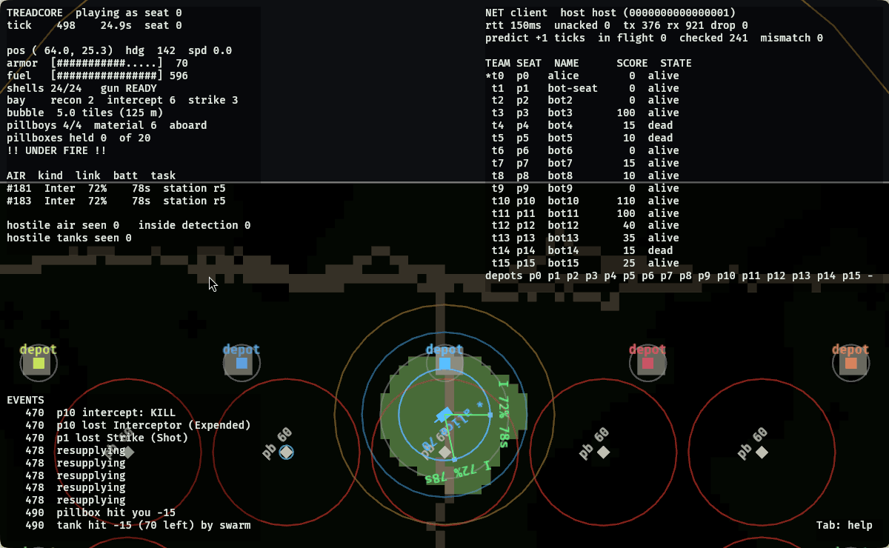
II · Treadcore
Each match is played on one of eleven maps, or on a map generated from the seed. A census rotates through them, so a change that helps on islands and hurts on land is seen as both.
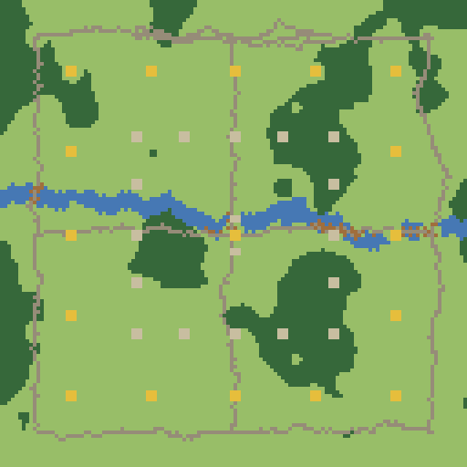
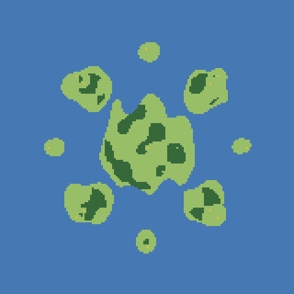
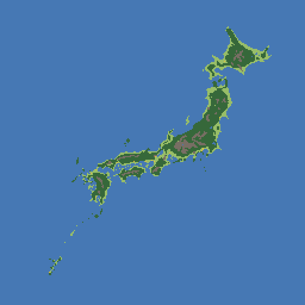
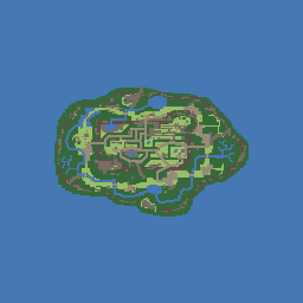
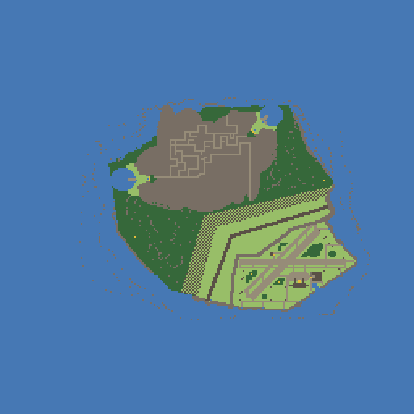
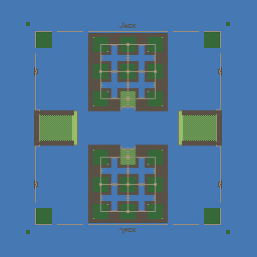
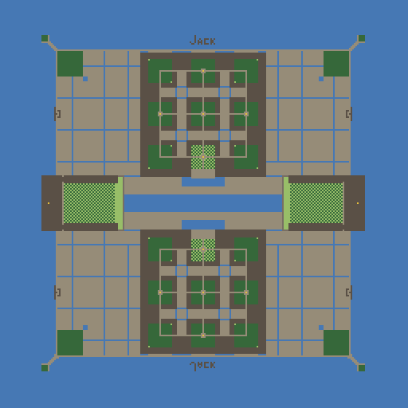
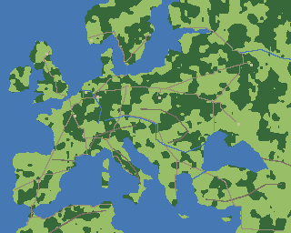
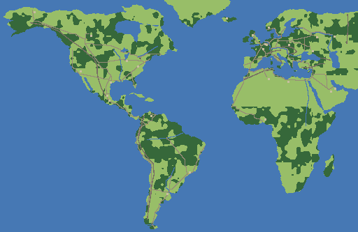
Fig. 2. The census maps, drawn from their tile files: grass, forest (dark green), road and rubble (grey-brown), water (blue), depots (yellow), walls and concrete (dark). Prior-art maps are converted from the originals.
A census plays the same seeds twice over: one team on the trial brain, two on the baseline, and every team takes the trial seat once a seed, so the starting positions cancel. Its answer is the trial's score less the baseline's, a seat, with a standard error over the seeds:
The error falls as one over the square root of the seeds. Measured on the fleet, one seat's error is about 3.3 divided by √seeds: ±0.45 at 55 seeds, ±0.17 at 400. The bar for a change is two errors; a trial past it is read again on two sets of 400 seeds no trial saw, and then against the scenario families, each a behaviour held to a floor (a tank under a shell dodges 99% of the time, a duel in the open is won 55%).
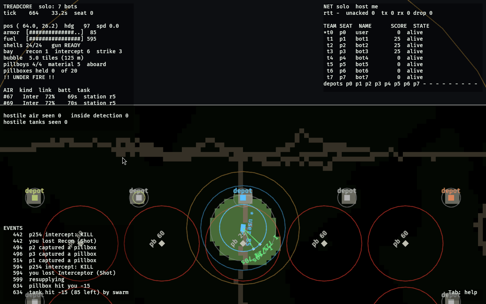
III · Two brains
Utility AI: each possible action is scored by its considerations (distance, armour, odds,
a teammate's call), each weighed by a named scalar in weights.rs. The target score,
for instance, adds a distance term w_near / (1 + d / near_scale), a wounded term,
a one-shot term, a focus term for a teammate already on it, an in-range term and a threat
term. It is the yardstick because it is best practice written down: every function was
added for a reason recorded in a lab report, and kept only if the census said so.
A net of three layers, 143 → 64 → 64 → 47, with ReLU between: 16,431 numbers. Its 143 senses are a compass of 8 sectors × 11 channels (hostile tank, ally, pillboxes, depots, a shell coming, ground, cover, a call), its body, its instruments, a periscope on the nearest enemy and the thing to take, the scripted brain's hints, and contacts for shells and drones. Its 47 outputs are seven heads: where to drive (10), where to shoot (9), how to lead (3), the mortar (9), a drone (5), the squad (7), a call (4).
Intelligence does not appear in a net until it has seen a great deal of play. A net started from random numbers spends its first millions of matches learning to drive straight. Copying a brain that already plays (behaviour cloning) skips that: 47 million recorded decisions, fitted on one GPU in under four minutes, gave a net (bc2) that plays level with the official net. The cost is bias: a clone plays like its teacher and no better, and treadcore's clones hit that ceiling (LR 108). From a cloned start, the next generations come from the census itself: each candidate net judged against the best, only a better one kept. That is a working generational set of coefficients, and the census, with the scripted brain as its opponent, is the metric every generation is judged by.
IV · A worked example
One moment from a recording made by the fleet on 28 October (seed 9900000, decision 4564 of 4800), put through the net bc2 by hand in Python, as the game does it in Rust. Of the 143 senses, 51 are lit; the rest are zero.
| sense | value |
|---|---|
| compass 0 AlliedTank | 0.419 |
| compass 0 HostilePillbox | 0.144 |
| compass 0 NeutralPillbox | 0.206 |
| compass 0 OurPillbox | 0.366 |
| compass 0 DepotToTake | 0.124 |
| compass 0 OurDepot | 0.395 |
| compass 1 AlliedTank | 0.453 |
| compass 1 OurPillbox | 0.393 |
| compass 3 Cover | 0.548 |
| body armour | 1.000 |
| body shells | 0.375 |
| body fuel | 1.000 |
| body reload | 0.812 |
| body pillboy out | 1.000 |
| body pillboy material | 0.250 |
| body recon bay | 0.500 |
| body interceptor bay | 0.333 |
| body strike bay | 0.333 |
| nav X | 0.595 |
| nav Y | 0.160 |
| nav Sin | 0.594 |
| nav Cos | 0.009 |
| nav Edge | 0.281 |
| contact EnemySin | -0.944 |
| contact EnemyCos | -0.331 |
| contact Enemy | 0.145 |
| contact EnemyClosing | 0.822 |
| contact EnemyAspect | 0.983 |
| contact TakeSin | -0.947 |
| contact TakeCos | -0.321 |
| contact Take | 0.438 |
| contact HomeSin | -0.110 |
| air Sin | -0.769 |
| air Cos | 0.640 |
| air Near | 0.090 |
| air Threat | 1.000 |
| air Bubble | 1.000 |
The first matrix. Each of the 64 first-layer units takes every sense times its weight, adds a bias, and keeps the sum only if it is positive. On this moment 21 of the 64 fire, and 20 of the 64 in the second layer. The strongest is unit 16 at 3.843; Table II is what made it, sense by sense.
| sense | x | weight | x × w |
|---|---|---|---|
| body fuel | 1.000 | +1.728 | +1.728 |
| nav X | 0.595 | +0.275 | +0.164 |
| nav Edge | 0.281 | -0.257 | -0.072 |
| compass 0 OurPillbox | 0.366 | +0.144 | +0.053 |
| contact Home | 0.445 | -0.107 | -0.047 |
| contact EnemyClosing | 0.822 | -0.049 | -0.040 |
| compass 0 NeutralPillbox | 0.206 | +0.149 | +0.031 |
| compass 6 NeutralPillbox | 0.438 | +0.063 | +0.028 |
Its bias is +1.804. This is the transform the Net page draws: each pixel of a heat map is one of these weights, its colour the sign.
| head | best three scores | net | scripted | same |
|---|---|---|---|---|
| drive | stop 3.32, SE -0.43, E -0.80 | stop | stop | yes |
| gun | hold 4.73, sector 1 0.10, sector 5 -0.13 | hold | hold | yes |
| lead | at 8.41, between -6.75, led -10.95 | at | at | yes |
| mortar | sector 8 2.03, sector 7 1.78, sector 5 1.26 | sector 8 | hold | no |
| drone | recon 4.64, hold 0.58, interceptor -0.55 | recon | strike | no |
| squad | mine 2.53, mend 0.69, harvest 0.69 | mine | hold | no |
| signal | help 0.89, take 0.37, attack 0.30 | help | hold | no |
The net agrees on driving, the gun and the lead. It would fire the mortar and launch a recon where the scripted brain held and launched a strike; at play these choices are masked to the ones allowed at that moment. Its squad and signal heads were never trained (the scripted brain's labels for them are zero; LR 109), which this table shows plainly.
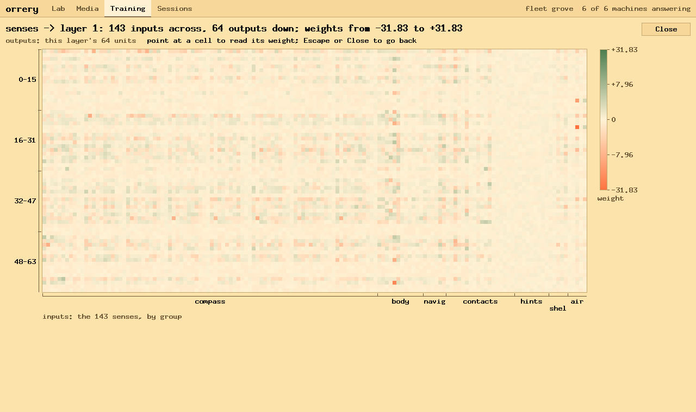
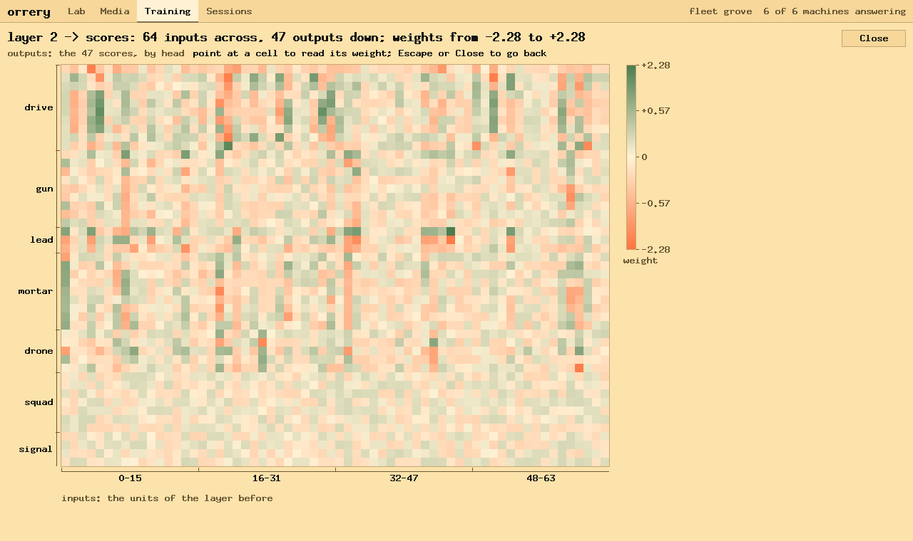
V · Test data
There is no human play to learn from at scale. All of the data is the simulation, played headless at many times real time: a 15-minute match of sixteen seats takes about 30 seconds of one core. On 28 October alone the fleet played 72,285 matches of 15 minutes (18,071 hours of play), made 2.76 billion brain decisions and advanced 19.8 billion seat-ticks; the GPU fitted 416 million samples. That volume is what makes a difference of half a seat visible at all.
| measure | count |
|---|---|
| matches of 15 minutes | 72,285 |
| hours of play | 18,071 |
| brain decisions (thinks) | 2,763,823,140 |
| seat-ticks | 19,785,988,688 |
| planned moves | 721,567,278 |
| training sample-steps (GPU) | 416,116,764 |
VI · The cluster
Play is integer- and branch-heavy and runs one match a core: it wants many CPU threads. Fitting a net is dense arithmetic: it wants a GPU. The fleet has both.
| machine | role | threads | GPU | note |
|---|---|---|---|---|
| saskatchewan | census | 24 | the census machine; ran 64 generations of the search alone | |
| boburner | census, GPU | 16 | GTX 1070 Ti, 8 GB | Ryzen 7 3700X; joined 28 October; CUDA 12.9 on driver 580 |
| calber | census, GPU, store | 8 | GTX 1080 Ti, 11 GB | trains the net; holds the recordings |
| columbia | census, judge | 8 | i3-N300; judges net rounds | |
| nasser | census | 4 | i3-2310M; busybox login shell | |
| the Mac | coordinator, census | 8 | runs orrery, pushes the code; the only machine with ssh to all |
Measured rates: saskatchewan alone read 2,229 seeds of 15 minutes an hour over 41 hours; the whole fleet reads about 5,200. The 1080 Ti fits about 2.55 million samples a second at a batch of 32,768; a round of 52 million samples takes 90 seconds.
VII · Orrery
| part | file | role | applies to |
|---|---|---|---|
| the engine | tools/fleet-queue.py | the queue, a lane a machine, the keeper, stop adding, stop now, sync, shutdown, runs | orchestration |
| the plan | tools/plans/treadcore.py | what to measure next: builds, the weight search, held-out reads, families, net rounds, runs, promotion, sync | treadcore |
| the view | tools/plans/treadcore-view.py | the document the Training view draws | treadcore |
| the console | src/training.rs, src/sessions.rs | the Training and Sessions views | orchestration |
| the work | treadcore scripts/census.sh, the brain's tests, ledger.py, suggest.py, tools/bc | one census, the families, the ledger, the fit, the trainer | treadcore |
~/code/treadcore/build/queue/grove holds config.json (who works, how each
powers off, how often to gather) and plan.json (what to train). Jobs are files moved
between queue/, running/HOST/, done/ and failed/; a move
is atomic, so two machines never take one job. Everything is readable with ls.
The plan follows origin/main. The Mac pushes; at each top-up the plan fetches, and
every machine fast-forwards its own checkout and builds the commit once, in its own folder. A
census plays the binary its machine built for that commit and never rebuilds (a shared build
folder once handed a census another commit's binary; LR 117).
A candidate is prepared on a branch: its numbers written into weights.rs, the
brain's tests and the families run, the commit pushed as the branch. It reaches main only when
a person presses Approve.
VIII · The interface
Start orrery as an operator on the standing queue; Command-1 to 4 switch views:
cd ~/code/orrery && cargo run --release -- --gui --operator paul --fleet grove \ --fleet-cmd "$HOME/.local/bin/copal fleet" --queue $HOME/code/treadcore/build/queue/grove
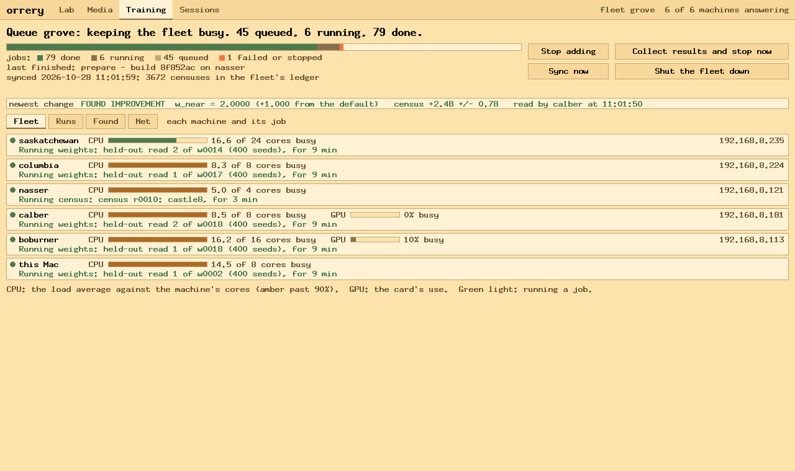
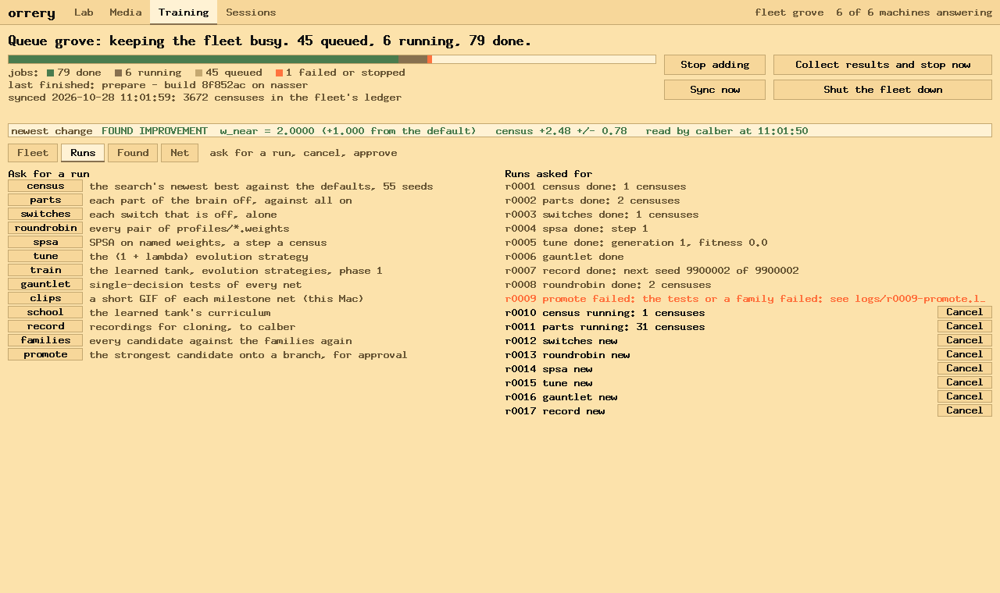
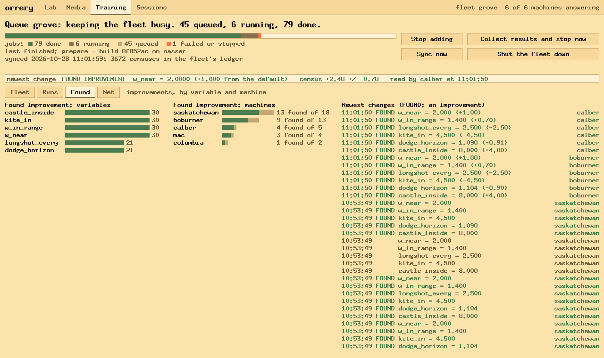
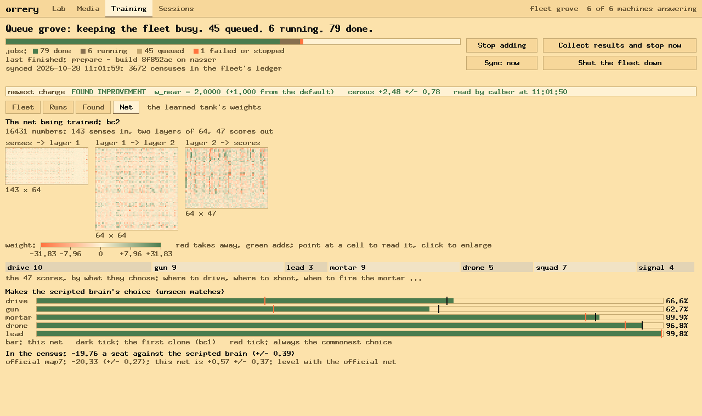
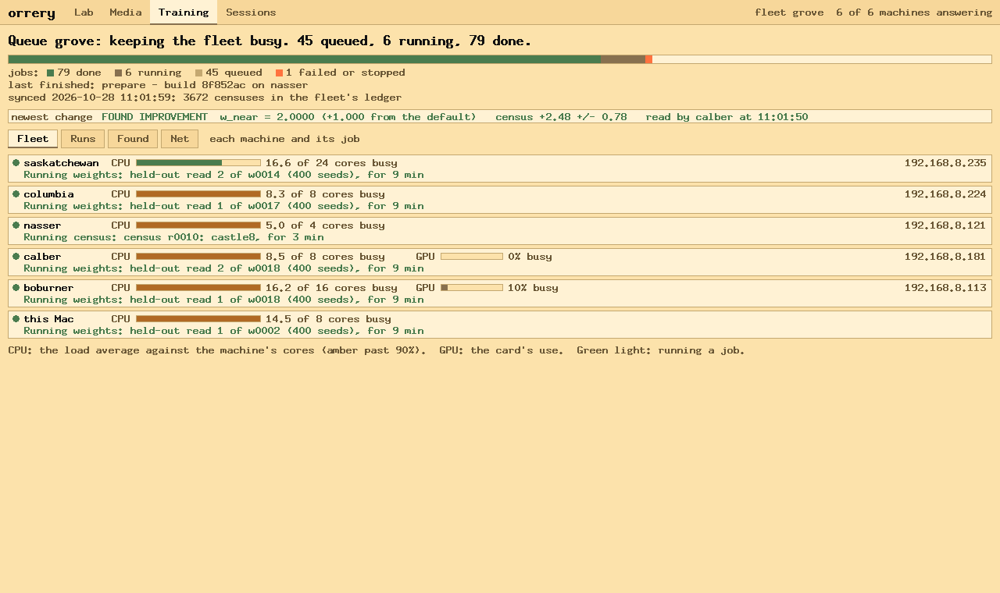
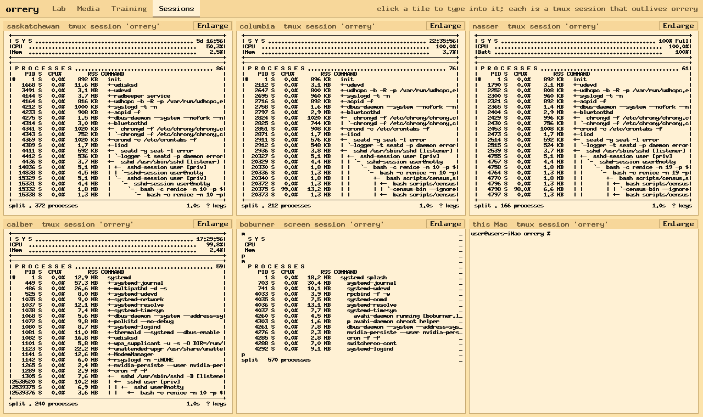
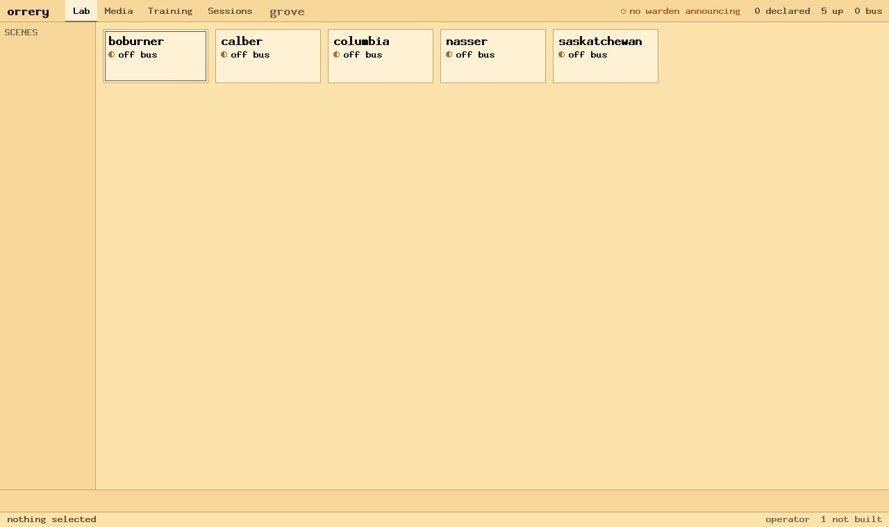
X · Every matrix and variable a candidate
A search that keeps reading what looked good last stops looking at the rest. The fleet keeps three records so that every variable stays a candidate:
build/ledger/fleet.tsv, 3,673 rows).plan/ticker.jsonl; the Found page).| times read | weights |
|---|---|
| never | 1 |
| 1-4 | 21 |
| 5-19 | 3 |
| 20-99 | 75 |
| 100+ | 11 |
| weight | censuses |
|---|---|
| dodge_horizon | 269 |
| castle_inside | 244 |
| w_in_range | 212 |
| kite_in | 175 |
| w_near | 172 |
| answer_cap | 120 |
| alpha | 117 |
| base_r | 110 |
The one weight never read is focus_blend, added on 28 October; the
search reads it at half and double at its next generation. For the net the same idea needs
blocks rather than single numbers: 16,431 parameters cannot each be read by a census. Each matrix
is cut into tiles (16 × 16 weights: 36 tiles in the first matrix, 16 in the second, 12 in the third, and the biases in 11 more, 75 in all), and the
coverage ledger keeps, for each tile, how many candidate nets moved it and with what verdict. A
generation's perturbations are drawn tile by tile, least-read first, so that no part of a matrix
is left at its cloned values for want of looking.
XI · Distributing the matrix
The queue already distributes the scripted brain's search: a trial is a weights file, a job a
census. The net's refinement fits the same shape, because a census can play any net
(CENSUS_NET=). Three methods, each a kind of job:
| method | a job is | machines | what it needs |
|---|---|---|---|
| Evolution strategies over tiles | a census of the best net with one tile perturbed (± σ) | every CPU | a population of 2k perturbations a generation; the update weighted by each census's difference |
| SPSA over the whole net | a census of θ + cΔ against θ − cΔ, paired by seed | every CPU | one census a step; the noise of ±0.45 a seat at 55 seeds sets the step size |
| PPO from bc2 | rollouts of self-play recorded on CPUs; an update on the GPU | CPUs record, calber and boburner fit | a reward: the census score's terms, as weights (below) |
The distribution is orrery's job file, nothing more: a job carries its command, the files to send,
and the path to fetch back. A tile perturbation is a 66 KB net sent with the job; the census on the
host plays it with CENSUS_NET; the planner reads the pooled difference and moves the
best net. The same keeper restarts dead lanes, waits for lost machines, and stops on five failures in
a row, so a generation of 200 censuses needs no care beyond reading it.
The census score is a sum of terms (kills, deaths, pillboxes taken, damage, defends and more). For PPO those terms become the reward, each with a weight; the plan is eleven reward-term weights, all starting at 0 as placeholders for feedback, read by the same census and screened like any other weight. The scripted brain's 111 weights, the net's tiles and the reward's terms then share one ledger, one search and one rule: a change is kept only past two errors, twice held out, with the families holding.
XII · Convergence
All of these are arithmetic from measured rates, not promises: about 5,200 seeds of 15 minutes an hour across the fleet, an error of 3.3 / √seeds a seat, and the GPU at 2.55 million samples a second.
The bottleneck is the CPUs, by a wide margin: the GPU fits a round in a minute and a half and then waits. Every machine added to the fleet shortens every line above in proportion; a second GPU matters only once rounds are recorded faster than one card can fit them.
XIII · Operating procedures
| to | do | applies to |
|---|---|---|
| start | Start the queue, or fleet-queue.py Q ensure | orchestration |
| watch | Training · Fleet; Found for results; Sessions for a machine's own state | orchestration |
| ask for a measurement | a button on Runs, or new KIND k=v | treadcore |
| add a machine | add it to config.json; it builds the newest commit and takes work | orchestration |
| set up a CUDA machine | sudo bash cuda-node.sh on it: driver, CUDA 12.9, tmux, copal-tm | orchestration |
| take a machine out | delete it from config.json; its lane ends after its job | orchestration |
| bring a change into treadcore | promote, read the prepared branch, Approve | treadcore |
| end the day | Stop adding, or Shut the fleet down | orchestration |
| resume in a new session | fleet-queue.py Q status and runs; Start the queue if stopped | orchestration |
XIV · Limits and open problems
fleet-poweroff-setup.sh.tools/plans/NAME.py
and view, and the engine and console would not change.References
documentation/LAB-REPORT-BRAIN.md, sections 92 (the census as a learner), 106–110 (cloning, the fleet records), 111–117 (orrery takes over training).documentation/CENSUS.md: running, reading and resuming the census.docs/fleet-train.md: the queue, its files and commands.docs/cuda-node-lab-report.md: making an Ubuntu machine a CUDA node.